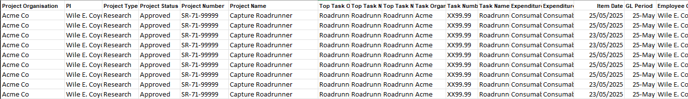
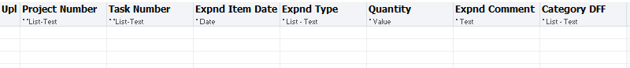

The problem
The source finance data and the journal upload template use different structures. The input file contains one set of fields and formats, while the uploader expects a different schema, column order and set of values.
Preparing the journal therefore involves transforming and mapping the source data, applying business rules to populate the required fields, and validating the result before it can be uploaded.

Source data structure

Required journal upload structure
On larger journals, carrying out those transformations manually could take several hours and relied on the user knowing how each source field should be interpreted, transformed and represented in the final upload file.
What I built
I built JournalWings to turn that process into a guided workflow.
The user loads the source files, chooses the type of journal they need, and the application handles the underlying transformations, validation and business rules before producing the structured output.
The aim was to make the process less error prone by removing the high level of manual work. And to provide a clear, auditable summary of the costs that were moved and why, and finally to be able to so far more quickly and more accurately.
How it works
JournalWings takes the source financial data and processes it according to the selected workflow. It applies the relevant rules, checks for common issues and prepares the output without requiring the user to manually reshape the transaction data themselves.
I designed it as a reusable application rather than a one-off script, so the same interface can support multiple journal scenarios.
Impact
On larger workflows, JournalWings cuts several hours of manual processing down to a much shorter time of minutes.
It also reduces repetitive handling, makes outputs more consistent and gives users clearer feedback when something needs attention.
Why I built it
This project came from seeing a process that was technically working, but depended on too much manual effort and too much tacit knowledge.
I wanted to see whether I could take that knowledge, turn it into explicit rules, and build a tool that made the workflow easier for someone else to follow.